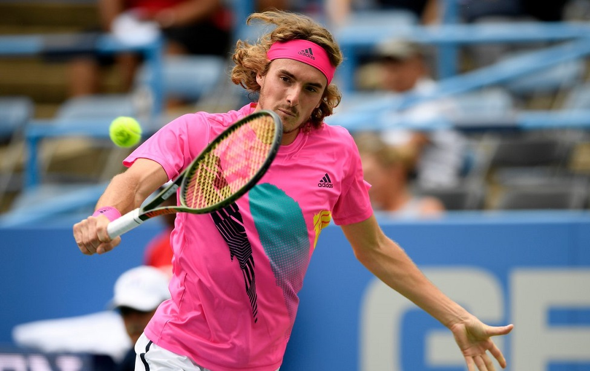
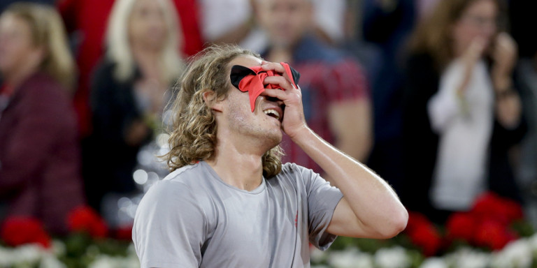
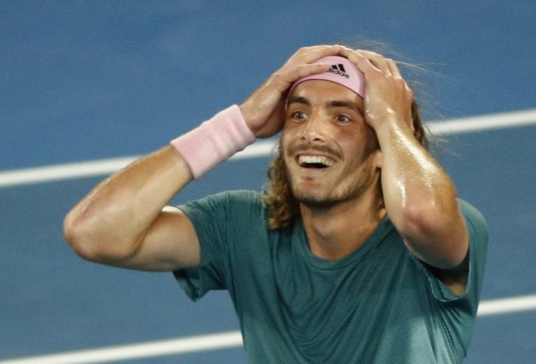
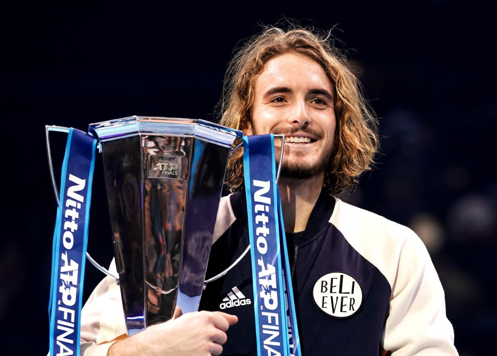
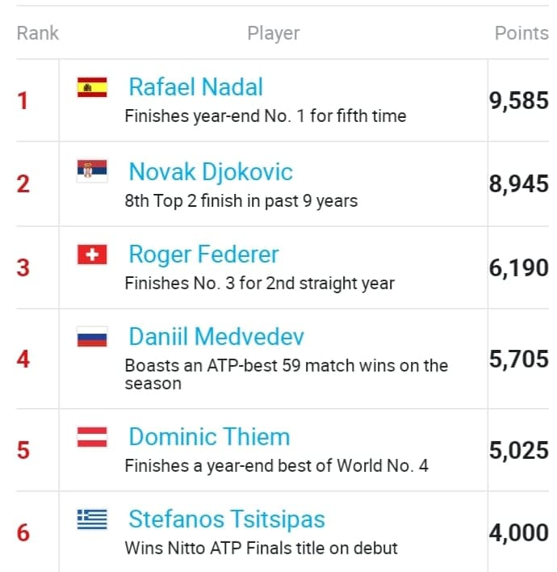

Στέφανος Τσιτσιπάς
Ο Στέφανος Τσιτσιπάς είναι Έλληνας επαγγελματίας τενίστας, 6ος στην παγκόσμια κατάταξη σήμερα. Είναι ο πρώτος Έλληνας που έχει μπει στους 100 καλύτερους τενίστες και ο πρώτος (και μέχρι σήμερα ο μοναδικός) που κατέκτησε
τίτλο Γκράν Σλαμ της περιόδου Open στην κατηγορία εφήβων (Junior), όταν κατέκτησε το διπλό του
Γουίμπλεντον αγοριών το 2016 με συμπαίκτη τον Eσθονό Κένεθ Ράισμα.
Έχει κερδίσει συνολικά πέντε τίτλους ATP singles Futures καθώς και έξι ATP τίτλους Futures στο διπλό.
Είναι γιος του Απόστολου Τσιτσιπά, από το Προάστιο Καρδίτσας, και της Yuliya Salnikova, Ρωσίδας πρώην επαγγελματία τενίστριας.Ο παππούς του Σεργκέι Σάλνικοφ ήταν Ρώσος ποδοσφαιριστής και μάνατζερ.
 |
 |
 |
 |
Η διαδρομή του προς την καταξίωση
Ο Τσιτσιπάς γεννήθηκε στις 12 Αυγούστου 1998, γιος του Αποστόλη Τσιτσιπά και της Τζούλιας Αποστόλη (το γένος Σαλνίκοβα) στην Καρδίτσα. Ο πατέρας του είναι Έλληνας και η μητέρα του Ρωσίδα. Οι γονείς του είναι επαγγελματίες τενίστες, ενώ η μητέρα του ήταν νούμερο 1 στην κατηγορία νέων, ήταν εντός των κορυφαίων 200 παγκοσμίως και εκπροσώπησε την Σοβιετική Ένωση στο Φεντ Καπ. Δεν προχώρησε στην καριέρα της γιατί υπήρχαν περιορισμοί στην ελευθερία μετακίνησης εκείνη την εποχή. Ο πατέρας του εργάζονταν ως δάσκαλος της αντισφαίρισης στο ξενοδοχείο Αστήρ Παλάς στη Βουλιαγμένη όταν γεννήθηκε. Αρχικά γνωρίστηκαν σε τουρνουά της Παγκόσμιας Ομοσπονδίας Τένις στην Αθήνα όπου η μητέρα του ήταν παίκτρια και ο πατέρας του ήταν διαιτητής. Ο Στέφανος έχει τρία αδέλφια, τον Πέτρο, τον Παύλο και την Ελισάβετ, όλοι τους παίκτες του τένις. Οι γονείς του έχουν μεγάλη ιστορία στο τένις. Οι γονείς του Τσιτσιπά θυμούνται ότι ο γιος τους άρχιζε να παίζει σε πολύ μικρή ηλικία. Ο Στέφανος δήλωσε: "Θυμάμαι ότι ήμουν τριών χρονών και χτύπαγα μπάλες με τον πατέρα μου στο κενό ανάμεσα στα μαθήματα. Θυμάμαι να βλέπω αγώνες στην τηλεόραση, όταν ήμουν μωρό. Δεν μπορώ να σας πω ποιος έπαιζε αλλά θυμάμαι ότι το παρακολουθούσα." Συμμετείχε και σε άλλες αθλητικές δραστηριότητες, όπως κολύμβηση και ποδόσφαιρο(η μεγάλη αγάπη του μετά το τέννις, πρότυπο του ο Ροναλντίνιο). Ο πατέρας του είπε ότι ο Στέφανος αποφάσισε ο ίδιος να γίνει τενίστας, ανακαλώντας τα λόγια του γιου του όταν "τον ξύπνησε στα μέσα της νύχτας" μετά από ένα τουρνουά στη Γαλλία στην ηλικία των 9 ετών, λέγοντας του "Πατέρα, έχω να σου πω κάτι. Θέλω να γίνω τενίστας, μου αρέσει ο ανταγωνισμός, μου αρέσει η πρόκληση." Ο Τσιτσιπάς άρχισε να παρακολουθεί μαθήματα στο Σύλλογο Τέννις της Γλυφάδας στην Αττική όταν ήταν έξι ετών, και από τότε έχει συνεχίσει εδώ και καιρό να προπονείται εκεί. Ο κύριος προπονητής ήταν ο πατέρας του, ο οποίος σπούδασε προπόνηση τένις στο Πανεπιστήμιο Αθηνών για να βοηθήσει τα παιδιά του. Το 2015, ο Τσιτσιπάς άρχισε να προπονείται στην ακαδημία Πάτρικ Μουράτογλου, χωρίζοντας τον χρόνο του ανάμεσα στη Γαλλία και την Ελλάδα εκείνη τη περίοδο. Το κόστος των ταξιδιών ήταν πολύ μεγάλο, δεν υπήρχε στήριξη από την ομοσπονδία αντισφαίρισης ή άλλο φορέα. Η αδερφή της μητέρας του τον στήριζε οικονομικά και γι αυτό δηλώνει ευγνώμων.
Τα μυθικά επιτεύγματα του Έλληνα τενίστα!
Εδώ βλέπουμε την παγκόσμια κατάταξη σήμερα στην οποία ο Στέφανος Τσιτσιπάς καταλαμβάνει την 6η θέση.

Κοινωνική προσφορά
Παράλληλα ως νέος άνθρωπος έχει δείξει από πολύ νωρίς τις κοινωνικές του ανησυχίες και στέκεται πάντα μπροστάρης όπου δει ότι υπάρχει ανάγκη. Παράδειγμα η κινητοποίησή του για τους πυρόπληκτους της φονικής πυρκαγιάς στο Μάτι Αττικής. Κάλεσε στον προσωπικό λογαριασμό του στα social media τους ακόλουθους του να συνδράμουν στην ενίσχυση και ο ίδιος έδωσε πρώτος το παράδειγμα προσφέροντας 5000 ευρώ.Σε όλη του την πορεία δεν ξεχνάει τους ανθρώπους που τον στήριξαν. Δεν ξεχνάει τον πρώτο του προπονητή Γιώργο Φουντούκο. Τον πρώτο του ATP τίτλο(2018) αφιέρωσε στον DJ Avicii ο οποίος απεβίωσε τη χρονιά αυτή. Πρότυπό του ο Ρότζερ Φέντερερ και ο Ελβετός Στάνισλας "Σταν" Βαβρίνκα όπως και ο Αργεντινός Χουάν Μάρτιν ντελ Πότρο. Τα συνολικά κέρδη του 20χρονου τενίστα φτάνουν πλέον στα 5.535.000 δολάρια.